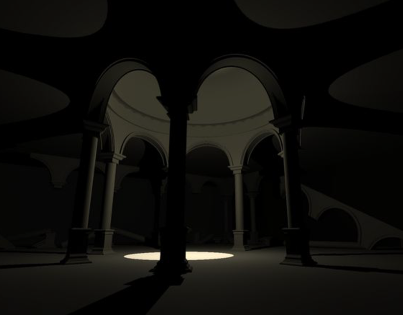
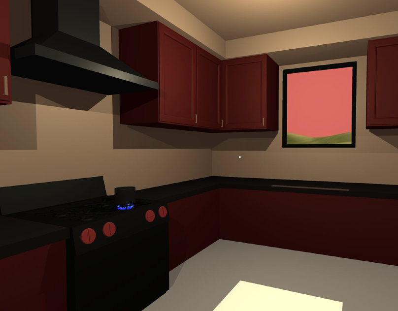

Shadow Crown (2024)
A small 3d environment made as a study on form and shadow. Made as a homage to Tadao Ando’s work.
Scene assembly in Unity; Assets modeled in Blender.

A small 3d environment made as a study on form and shadow. Made as a homage to Tadao Ando’s work.
Scene assembly in Unity; Assets modeled in Blender.

A small 3d environment made as a study on time.
Wait for the water to boil while the sun sets over the course of five minutes.
Scene assembly in Unity; Assets modeled in Blender.
